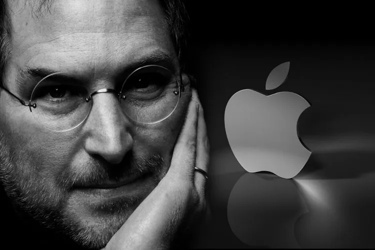

"The people who are crazy enough to think they can change
the world are the ones who do."
--Apple's "Think Different "commercial,1997
One of the last times I saw him ,after I had finished writing most of the book,I asked him again about his tendency to be rough on people ."Look at the results,"he replied."These are all smart people I work with,any of them could get a job at another place if they were truly feeling brutalized.But they don't".Then he paused for a few moments and said ,almost wistfully,"And we got some amazing things done."Indeed he and Apple had a string of hits over the past dozen year that was greater than that of any other innovative company in modern times;iMac.iPod,iPod nano,iTunes Store-not to mention every Pixar film.And as he battled his final illness,Jobs was surrounbded by an intensely loyal cadre of collegues who had been inspired by him for years and a very loving wife,sister,and four children.
